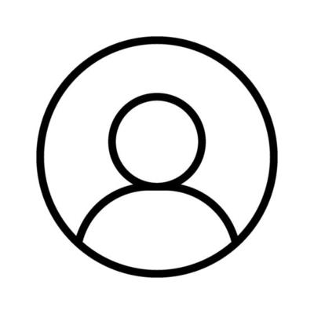

<!-- Navbar  -->
<div class="navbar mb-5 px-5 shadow-sm sticky-top bg-body">
    <div>
        <h5>Administrateur</h5>
    </div>
    <div class="dropdown">
        <ng-container>
            
        </ng-container>
            <div class="dropdown-content">
                <a [routerLink]="['/profilUser']">Profil</a>
                <a style="cursor: pointer;">Déconnexion</a>
            </div>
    </div>
</div>